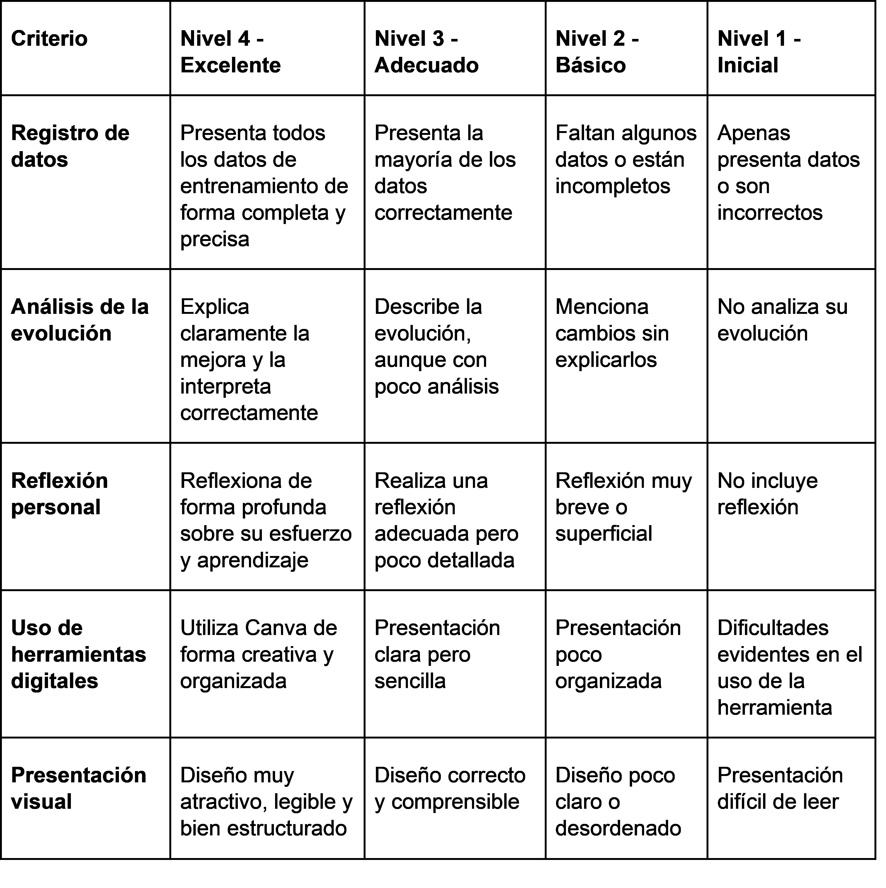
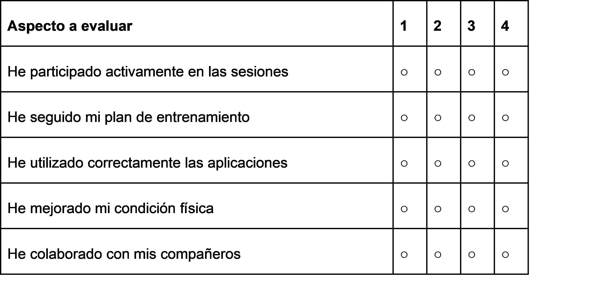

Instrumento 1: Rúbrica de evaluación del producto final
Descripción del instrumento:
Se utilizará una rúbrica para evaluar vuestra presentación digital elaborada en Canva, para ello, deberéis mostrar vuestra evolución de la condición física, los datos recogidos mediante aplicaciones digitales y una reflexión personal sobre vuestro progreso.
Qué se evaluará:
La rúbrica permitirá valorar:
● La correcta recogida y presentación de los datos de entrenamiento.
● La claridad y organización de la información.
● La calidad de la reflexión personal sobre la evolución física.
● El uso adecuado de herramientas digitales.

Instrumento 2: Escala de autoevaluación del alumnado
Descripción del instrumento:
Se empleará una escala de evaluación como instrumento de autoevaluación para que vosotros mismos valoréis vuestra implicación, esfuerzo y mejora personal a lo largo del proyecto.
Qué se evaluará:
La escala de evaluación incluye indicadores como:
● Participación en las sesiones prácticas.
● Cumplimiento del plan de entrenamiento.
● Uso responsable de las aplicaciones digitales como Strava y Fitnotes.
● Percepción de mejora en la condición física.
